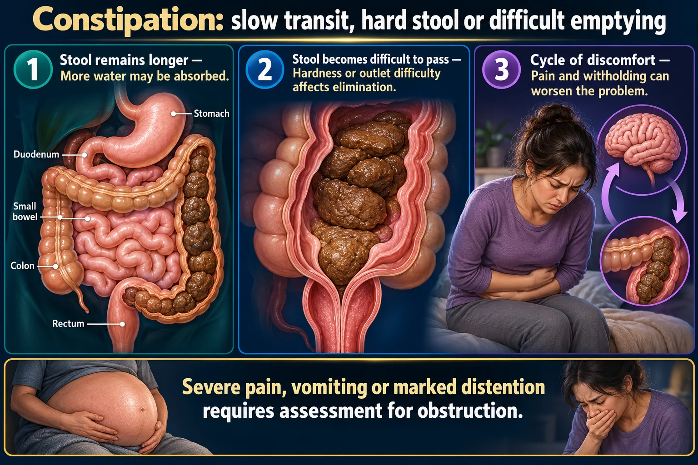

Constipation 💩
When the Gut Goes Quiet
Inability to pass stool — fancy words for: infrequent bowel movements or difficult passage of stools that persists for several weeks or longer. Defined as fewer than 3 stools/week plus hard, lumpy stools and straining.
CAUSE
STEP 1 · WHY THE GUT SLOWSSlow transit = more time for the colon to pull water back out of the stool.
🐌 Mechanism: slow transit = a drier, harder stool
EXAM TIP The colon's job is to reabsorb water from stool as it passes through. The slower the transit, the longer water has to be pulled out — so a sluggish colon makes a harder, drier stool that is painful and difficult to pass.

Severe pain, vomiting or marked distention requires assessment for obstruction.
Read the picture
Stool remains longer
More water may be absorbed.
Stool becomes difficult to pass
Hardness or outlet difficulty affects elimination.
Cycle of discomfort
Pain and withholding can worsen the problem.
Assess
Baseline pattern, medications, fluid, diet, activity and red flags.
Care
Individualize fiber, fluids, movement, toileting and prescribed therapy.
Complications
Impaction can produce overflow leakage; evaluate rather than assuming diarrhea.
⚠️ Common causes
- 😖 Stress
- 🥦 Low fluid & fiber intake — not enough fruits, veggies, whole grains
- 🛌 Immobility — bedrest, post-op, low activity
- 💊 Medications — opioids, iron, anticholinergics, calcium-channel blockers, aluminum/calcium antacids
- 🦋 Hypothyroidism — slows everything, including the gut
- 🧪 Hypokalemia — low K⁺ slows smooth muscle motility
- 🤰 Pregnancy, aging, ignoring the urge to go
🧂 The trap: fiber WITHOUT fluid backfires
Fiber inflates with fluid to scrub the GI tract and bulk the stool. Too much fiber without high fluid intake can actually cause constipation — a dry fiber mass is harder to move, not easier.
The fix is never fiber alone — it's fiber + fluid, together, every time.
CLUES
STEP 2 · READ THE STOOLThe Bristol scale turns "what does the stool look like" into a number you can chart.
📊 Bristol Stool Chart — types 1–2 = constipation
Use this scale to describe & chart stool consistency objectively — type 1–2 signals constipation, type 3–4 is the goal (normal), type 5–7 signals diarrhea.
🚩 Signs & symptoms
- 🚽 Passing fewer than 3 stools/week
- 🪨 Lumpy or hard stools — Bristol type 1–2
- 😣 Straining to have a bowel movement
- 🎈 Abdominal bloating, distension
- 🙁 Sensation of incomplete evacuation
⚠️ Complication: fecal impaction → encopresis
A hard mass of stool becomes stuck (fecal impaction). Liquid stool from higher up leaks around the blockage and looks like diarrhea — this is fecal incontinence (encopresis), an easy trap to mistake for the opposite problem.
🚨 Tell it apart from an acute surgical abdomen
Simple constipation pain is diffuse, crampy, and eases after a bowel movement. A different pattern means STOP — this is not simple constipation.
| 💩 Simple constipation | 🚨 Acute surgical abdomen | |
|---|---|---|
| Pain | Diffuse, crampy, comes & goes | Localized — e.g. RLQ, worsening, constant |
| Palpation | Soft abdomen | Rigid / board-like + rebound tenderness |
| Vitals | Normal | Fever, tachycardia, tachypnea |
| Action | Fiber, fluid, laxative per protocol | Report to HCP immediately — see Appendicitis (NG-302) |

CARE
STEP 3 · REBUILD THE HABITThree steps, always in this order — meds get the backlog moving, then fiber/fluid, then a rebuilt habit.
🪜 3 steps to treatment
💊 Laxative & stool softener classes
| Class | Example / clue |
|---|---|
| Bulk-forming 🌾 | Psyllium (Metamucil) — needs fluid! |
| Osmotic 💧 | PEG (MiraLAX), lactulose, milk of magnesia |
| Stimulant ⚡ | Senna, bisacodyl — short-term only |
| Stool softener 🧴 | Docusate sodium — prevention, not rescue |
✅ Nonpharm teaching
- 💧 Fluids 1.5–2 L/day (unless restricted)
- 🥦 Fiber 25–30 g/day — increase gradually
- 🚶 Ambulation / regular exercise
- ⏱️ Respond to the urge — don't hold it
- 🌀 Abdominal massage, warm fluids in the AM
❌ Never rules
QUICK RECALL
SAY IT OUT LOUD🎯 Cover & check — 4 rapid-fire questions
Constipation
Simple Nursing original handout · saved in your Drive.